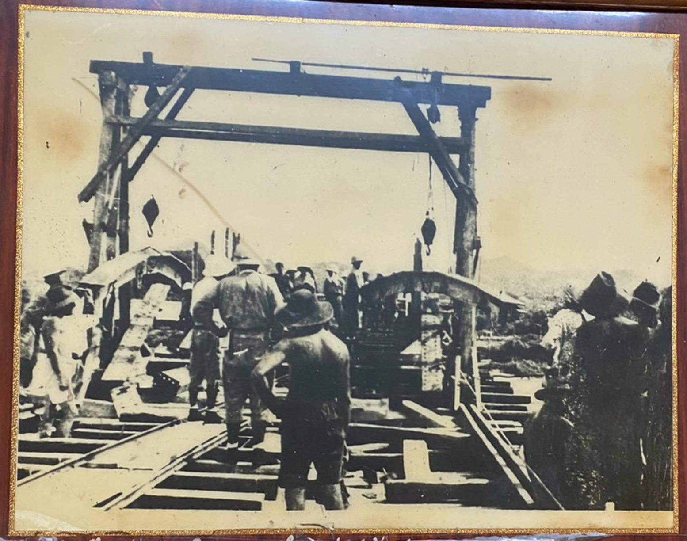
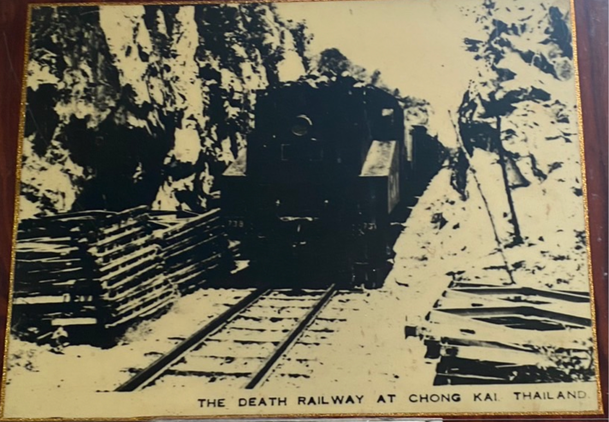
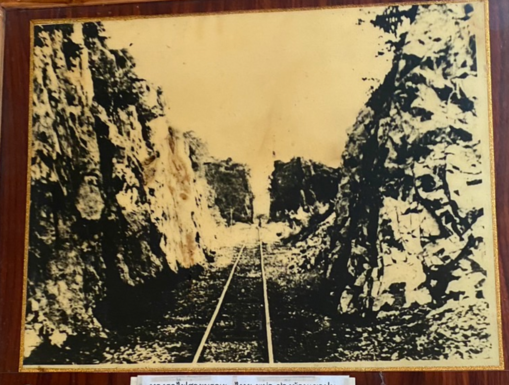

สะพานข้ามแม่น้ำแคว ภาพที่ท่านกำลังรับชมในส่วนจัดแสดงนี้รวมทั้งใน AR คือ
ภาพการสร้างสะพานข้ามแม่น้ำแควในสมัยสงครามโลกครั้งที่ 2 ทั้งส่วนที่กำลังก่อสร้าง
การใช้งานจริงกับขบวนและหัวรถจักรไอน้ำ
และ การเดินทางผ่านช่องเขาขาด
อันเป็นส่วนหนึ่งโครงสร้างพื้นฐานระบบรางที่สร้างขึ้นสำหรับการเดินทางไปยังเขตตันบูซายัต
ของประเทศพม่า
ในช่วงเวลาแห่งสงครามอันยิ่งใหญ่และโด่งดังไปทั่วโลกเหตุที่ญี่ปุ่นเลือก
เอาบริเวณนี้เป็นสถานที่สร้างสะพานข้ามลำน้ำไปยังฝั่งแควน้อย
เพราะเหตุว่าช่วงบริเวณหน้าเมืองกาญจนบุรีมีลำน้ำแควน้อย
และแควใหญ่ไหลมาบรรจบกันเป็นแม่น้ำแม่กลองเป็นช่วงที่สำน้ำกว้าง และ ดินอ่อนทำให้การก่อสร้างได้ยาก
จึงเลือกเอาบริเวณบ้านท่ามะขามซึ่งอยู่เลยไปประมาณ 5 - 6 กิโลเมตร
สะพานข้ามแม่น้ำแควนี้ชาวไทยเรียกว่าสะพานข้ามแม่น้ำแควใหญ่ ชาวต่างประเทศเรียกแม่น้ำว่า ริเวอร์
จึงกลายเป็น
ริเวอร์แควไปปี่ปุ่นเกณฑ์เอาเชลยศึกและกรรมการจำนวนมากมาจากค่ายต่างๆ เช่น
ค่ายช่องไก่ค่ายกาญจนบุรีและค่ายบริเวณใกล้กับสะพาน
กองทัพญี่ปุ่นไม่มีวัสดุอุปกรณ์ทั้งเหล็กและเครื่องจักรขนาดใหญ่
จึงต้องอาศัยแรงงานและฝีมือของเชลยศึกเป็นหลัก
ต่อมาสัมพันธมิตรเริ่มมีกำลังเข้มแข็งขึ้น
ได้นำเครื่องบินมาทิ้งระเบิดทำลายทางรถไฟ โดยเฉพาะบริเวณสะพานข้ามแม่น้ำแควถูกทิ้งระเบิดถึง 10 ครั้ง
โดยถูกโจมตีครั้งแรกในวันที่ 29 พฤศจิกายน พ.ศ. 2486 และในวันที่ 13 มกราคม พ.ศ. 2487
แต่ทัศนวิสัยไม่ค่อยดี
เมื่อเครื่องบิน บินมา ญี่ปุ่นจะกวาดต้อนเชลยศึกให้ขึ้นไปอยู่บนสะพานเพื่อให้ฝ่ายสัมพันธมิตร
ไม่กล้าทิ้งระเบิดลงมาเพราะจะถูกพวกเดียวกันต่อมาสะพานข้ามแม่น้ำแควถูกโจมตีอีกหลายครั้ง
มีครั้งหนึ่งถูกคอสะพานชำรุดไป 3 ช่วงแต่ก็ได้รับการซ่อมแซมใหม่จนใช้การได้ มีผู้เห็นเหตุการณ์เล่าว่า
สัมพันธมิตรพยายามทิ้งระเบิดทำลายสะพานบางครั้งใช้โซ่ผูกมัดลูกระเบิดเป็นพวงเพื่อให้ถูกสะพาน
มีผู้พบลูกระเบิดที่ไม่ระเบิดจมอยู่ในน้ำใกล้สะพานจำนวน 2
ลูกปัจจุบันได้นำมาตั้งแสดงไว้ที่เชิงสะพานหลังจากสงครามยุติ
การรถไฟแห่งประเทศไทยได้ซ่อมสะพานเพื่อให้ใช้การได้ดีเมื่อ พ.ศ. 2493 - 2495
และได้ซื้อทางรถไฟรวมทั้งสะพานข้ามแม่น้ำแคว
จากรัฐบาลอังกฤษ นับเป็นสะพานประวัติศาสตร์อนุสรณ์ของสงครามมาจนทุกวันนี้
จังหวัดกาญจนบุรีได้จัดงานสัปดาห์สะพานข้ามแม่น้ำแคว ในปลายเดือนพฤศจิกายน โดยมีการแสดงแสงสีเสียง
เป็นประจำทุกปีเพื่อระลึกถึงเหตุการณ์ของสงคราม มีคำกล่าวว่า "หนึ่งไม้หมอนหนึ่งชีวิต"
บทเรียนแห่งประวัติศาสตร์
โลกไม่เคยลืมเลือน
สะพานข้ามแม่นำแควหรือที่รู้จักกันในนามเส้นทางรถไฟสายมรณะ
ปัจจุบันสะพานแห่งนี้ยังคงมีการใช้งานจริงในการเดินทางสัญจรของการรถไฟไทย
สายกรุงเทพฯ น้ำตก สะพานข้ามแม่น้ำแควแห่งนี้จึงเปรียบเสมือนมรดกจากสงครามโลกครั้งที่ 2
ที่ทั้งชาวกาญจนบุรี ชาวไทย และชาวโลก
ต่างได้ใช้ประโยชน์ในการเดินทาง การท่องเที่ยว งานเทศกาล
และ เป็นสิ่งปลูกสร้างที่ชวนหวนระลึกถึงเหตุการณ์สำคัญของโลกใบนี้ใน ฐานะสัญลักษณ์ของสงครามที่จบลง
และบทเรียนแห่งสันติภาพนั้นเอง
นอกจากนี้มรดกที่สำคัญอีกแห่งหนึ่งคือ โรงงานกระดาษกาญจนบุรี ซึ่งมีคำกล่าวจากผู้คนใน
ชุมชนถนนปากแพรกว่า สถานที่แห่งนี้คือ ทัชมาฮาล แห่งกาญจนบุรี
โดยสืบเนื่องจากการสร้างขึ้นในพื้นที่ที่เป็นบ้านเกิดของภริยาของท่าน
ซึ่งเป็นชาวกาญจนบุรี โรงงานแห่งนี้ก่อตั้งขึ้นเมื่อปี พ.ศ. 2476
ในช่วงสงครามโลกครั้งที่ 2 โดยกระทรวงกลาโหม และเปิดอย่างเป็นทางการ เมื่อวันที่ 18 กันยายน พ.ศ. 2481
โดยพระยาพหลพลพยุหเสนา นายกรัฐมนตรีในขณะนั้น มีชื่อเมื่อแรกก่อตั้งว่า
โรงงานทำกระดาษทหารกาญจนบุรีเป็นโรงงานกระดาษแห่งที่ 2 ในประเทศไทย
(โรงงานกระดาษแห่งแรกเปิดกิจการ เมื่อ ปี พ.ศ. 2466 ตำบลสามเสน กรุงเทพมหานคร) และเป็นโรงงานแห่งแรก
ที่ผลิตธนบัตรไทยโดยใช้เยื่อไม้ไผ่ ภายในบริเวณของโรงงานกระดาษ แบ่งเป็นอาคารต่าง ๆ เช่น อาคารโรงงาน
อาคารกองทำเยื่อ
และโรงคลอรีน เป็นต้น ตัวอาคารเป็นแบบยุโรปสมัยกลาง ออกแบบโดยบริษัทจากประเทศเยอรมนี
เป็นสัญลักษณ์ในการเปลี่ยนแปลง สังคมจากเกษตรกรรมเป็นอุตสาหกรรมของจังหวัดกาญจนบุรี


